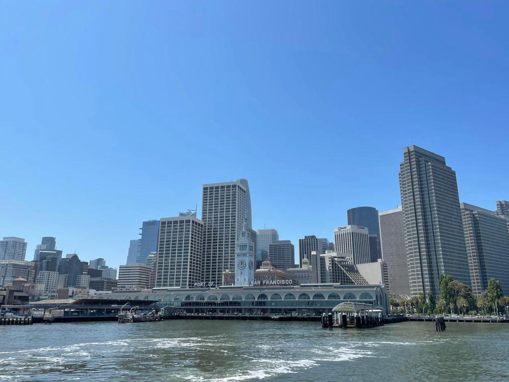
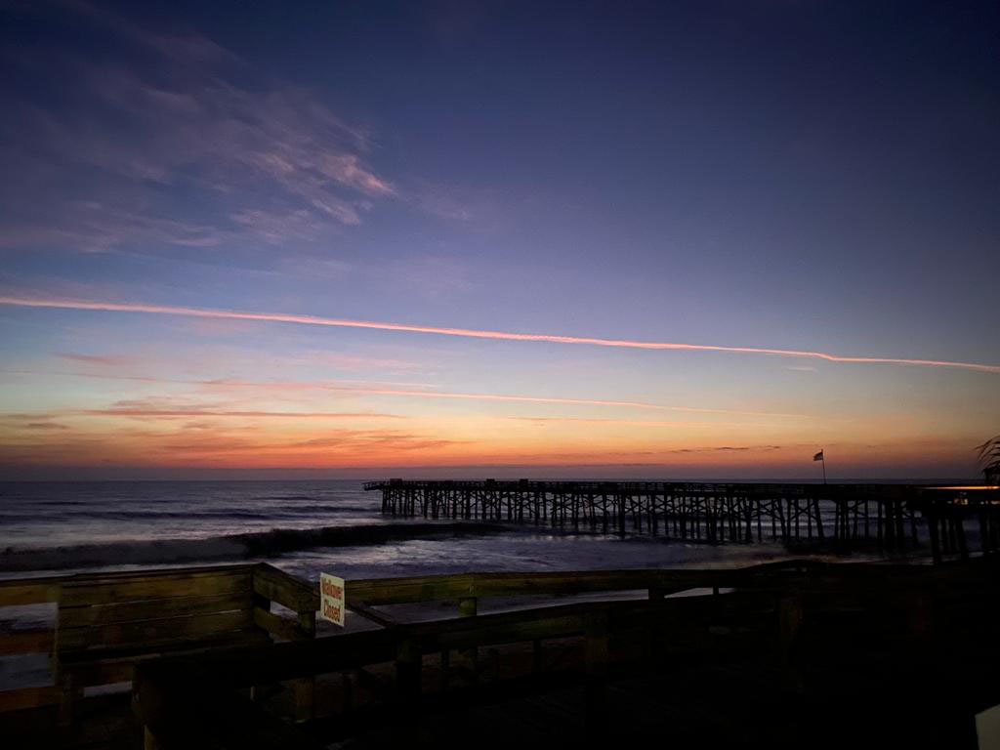
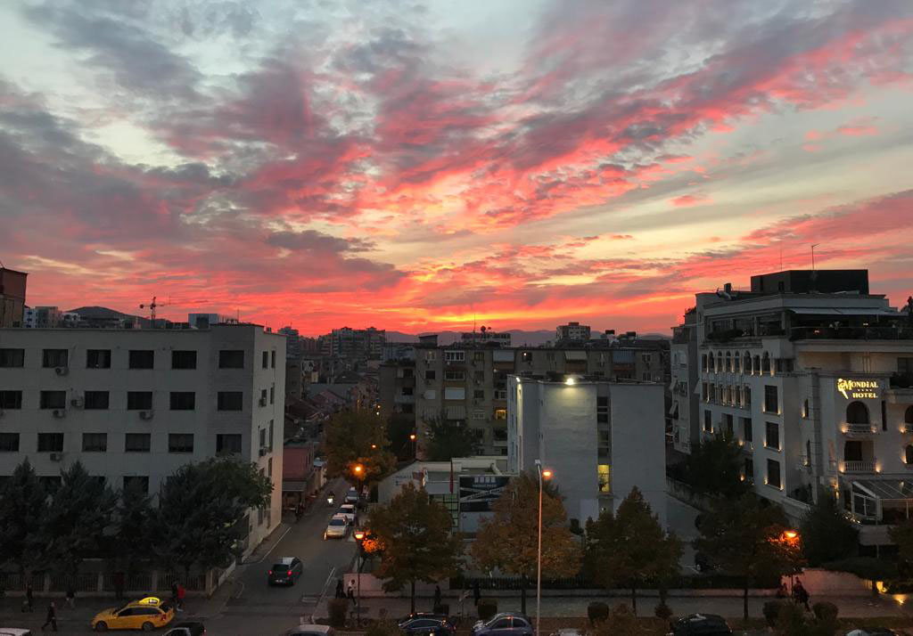
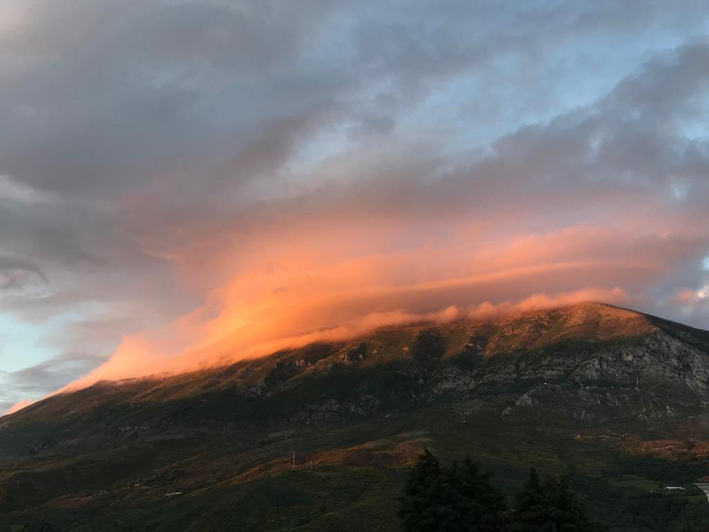

San Francisco, California
San Francisco, California is a great destination to visit during summer.
You can visit the
Golden Gate Bridge, take a ferry ride around San Francisco
Bay, take a tour of the city on
the cable car, or visit Walt
Disney's Family Museum.
Washington DC
Washington DC is the capital of the United States. If you have not visited it yet, you
definitely should. In DC, you can visit the White House, the Capitol, the Lincoln
Monument,
take pictures at the Washington Monument or take a tour around
downtown.
Flagler Beach, Florida

If you do not know where to spend your Spring Break, Flagler Beach is your destination.
You can go to the beach, visit St Augustin, which is the oldest city in the US, and shop
at the local stores, watch beautiful sunrises and sunsets, and if you are lucky enough,
you can watch Daytona Bike Week, an annual bike ride that only takes place in Florida.
Sedona, Arizona

If you love hiking, you just found your next destination. Sedona is one of the best
hiking
places with breathtaking views. It is best to visit during late Fall or early Spring,
as the temperatures are not too high during that time. A small tip: bring your water
bottles
to stay hydrated.
Tirana, Albania

Tirana is the capital city of Albania. You can visit it any time of the year.
You can go
around the city, visit different stores, visit museums, or go to Mount Dajti
to get a
better view of the city. If you are a coffee lover, this is your chance to try
rich flavored
coffee with numerous coffeehouses to choose from,
as Albania is the world leader in the
number of coffeehouses per capita.
Tepelene, Albania

Tepelene is a small town in southern Albania. It is mostly known for its castle of Ali
Pashe Tepelena and its traditional food. In Tepelene, you can visit Nivice Canyons,
go hiking
and visit Progonati Waterfall, visit Cold Water Springs, or go kayaking
in the Vjosa River.
Sarande, Albania

Saranda is a city in south Albania and is one of the most visited places by tourists
during
summer. During your time in Saranda, you can go to the beach, eat some of the
best seafood,
visit the Lekursi Castle, or visit Butrint, an areological national park that
dates back
to the 7th century BC.